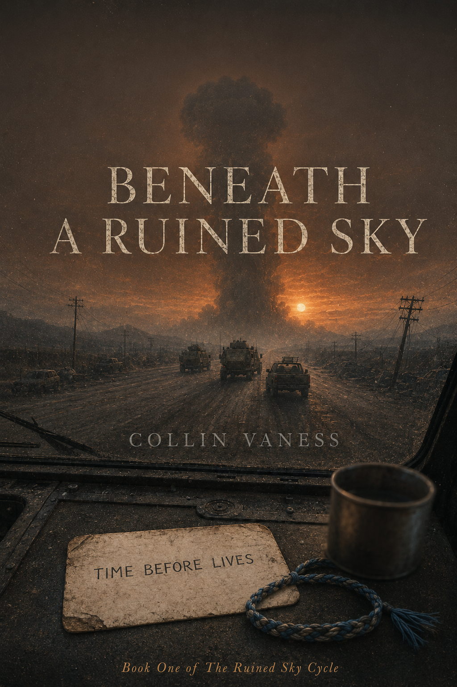

Military Thriller · Trilogy
The Ruined Sky Cycle
A Trilogy of the Long Aftermath
July 14, 2035. A single warhead removes Chicago. Six years later, a Ranger major is still counting.
Get release news →
About the trilogy
On July 14, 2035, a coordinated Eurasian Coalition nuclear first strike erases Chicago, then Ottawa, then American command. The Ruined Sky Cycle is the first decade of what comes after — the sixty-three-day war, the crossing to Europe, the corridor war along the Polish frontier, the camp at Gusev, and the long hunt across Lower Silesia for the man who ordered the killings.
Three books. Twenty-two named characters across the roster. Five survivors at the end of Book Three. The trilogy commits on day one — readers know from the dust jacket of Book One that it will commit.
Major Daniel Barnes, a former 75th Ranger with two tours, is on the road east when he learns by Red Cross telegram that his daughter Clara has been killed at a refugee-convoy ambush in Carolina. He writes her name on a small card. He puts the card in his pocket. He spends the next six years making sure it lands on the right seat between shot two and shot three.
The books

Beneath a Ruined Sky
On July 14, 2035, a single morning erases Chicago. By September 15, coherent American command is gone. In its silence, a Ranger major counts. By November, Major Daniel Barnes has crossed the Atlantic with what is left of his unit and met a Polish firefighter who will not tell him her first name. Elias Carter counts time on his wife’s silver bracelet, because counting is how he keeps faith. Emma Carter will cross an ocean to keep their children alive. From Brussels in 2091, an archivist opens a footlocker. Inside: a silver bracelet, a folded crossword puzzle, and a small water-stained card that reads one word.

The Village of Tears
October 2037. Eighteen months of corridor attrition have brought the 2nd WOT Brigade under Major Iwona Kowalska to the gates of the Gusev forced-labor complex — and brought the Coalition’s Skull-Banner command to the same gates in the other direction. Three days of fighting inside the wire will name the village that is not yet built: Wieś Łez, the Village of Tears.
A three-day set piece written in the tradition of Matterhorn and Black Hawk Down. Everything the Carter unit came to Europe to do is here, and everything it will carry for the rest of its life starts here.

The Second Covenant
Late 2037 through 2041. The Hague convenes a tribunal that collapses on chain-of-command grounds. Within a year, three witnesses and a Gusev doctor are dead. Major Barnes has a list, and a Chen-run intelligence line. Four hunts proceed in private. A wedding at the rebuilt convent at Wieś Łez in 2039. A Lower Silesia forest-service road in the summer of 2041 where Barnes finally kills Colonel Pyotr Kafelnikov with three shots from cover — a card reading CLARA on the sedan’s passenger seat between shot two and shot three.
The closing volume of the cycle — and the long, careful arithmetic of one man’s promise to his dead. In 2091 Brussels, an archivist opens the footlocker.
For readers of
Karl Marlantes’ Matterhorn, Elliot Ackerman & James Stavridis’ 2034, Tom Clancy’s Red Storm Rising, Kevin Powers’ The Yellow Birds, Mark Bowden’s Black Hawk Down, and Evan Wright’s Generation Kill.